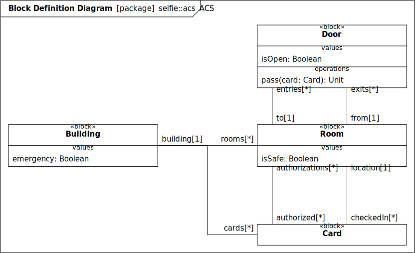
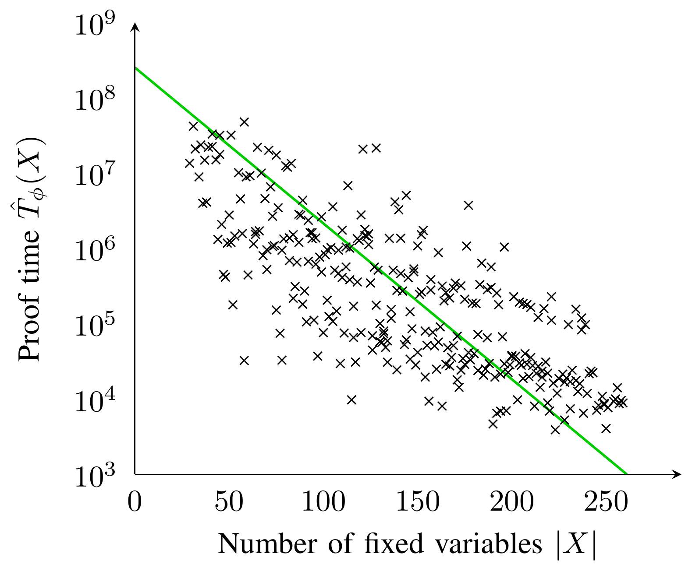

Self-Verification
Verification of Embedded Systems after Deployment
Martin Ring
28. Mai 2021
FSL

context Controllerdef e: sensor.valuedef off: e > config.e_hidef on: e < config.e_lodef off_s: cnt>=config.delaycontext Controller::tick()post a1: not off implies cnt=0post a2: off implies cnt=cnt@pre+ 1post a3: on implies light.statuspost a4: off_s implies not light.statuspost a5: not (on or off_s) implieslight.status=light.status@pre
Experimente
Zeitliche Abwägungen

Fallstudie: Zugangskontrollsystem
Fallstudie: Zugangskontrollsystem
Fallstudie: Zugangskontrollsystem
Fallstudie: Zugangskontrollsystem
Fallstudie: Zugangskontrollsystem
Fallstudie: Zugangskontrollsystem
Umsetzung
Umsetzung


Kostenfunktion
q(X) \triangleq \sqrt{\left(\frac{|X|}{\left|FV{\phi}\right|}\right)^2+\left(\frac{\log(\hat{T}_{\phi}(X))}{\log(T_{\phi})}\right)^2}
Fragen?